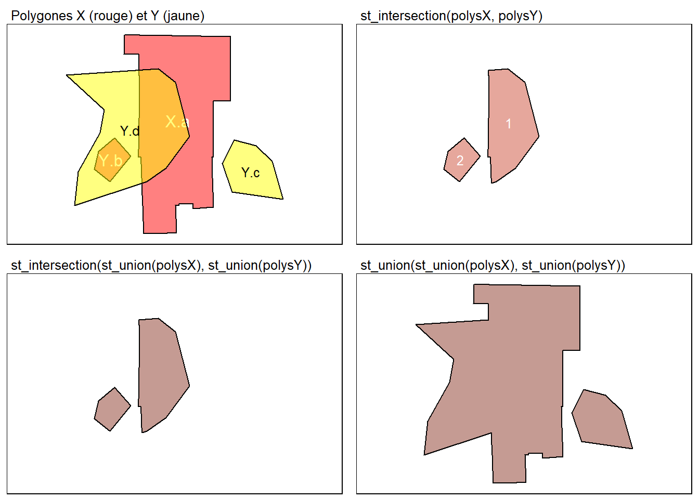

1.2 Manipulation de données vectorielles
Le package sf est une librairie extrêmement complète permettant de réaliser une multitude d’opérations géométriques sur des couches vectorielles comme dans un système d’information géographique (SIG). Notre objectif n’est pas de toutes les décrire, mais d’aborder les principales. Au fil de vos projets avec sf, vous apprendrez d’autres fonctions. Pour ce faire, n’hésitez pas à consulter :
- Une belle Cheatsheet sur
sf. Allez y jeter un œil, cela vaut la peine! - Sur le site CRAN de
sf, vous trouverez plusieurs vignettes explicatives (exemples de code documentés). - La documentation complète en PDF.
La syntaxe methods(class = 'sfc') renvoie la liste des méthodes implémentées dans le package sf. Pour accéder à l’aide en ligne de l’une d’entre elles, écrivez simplement ?Nom de la fonction (ex. : ?st_buffer).
## [1] [ [<-
## [3] as.data.frame c
## [5] coerce format
## [7] fortify identify
## [9] initialize ms_clip
## [11] ms_dissolve ms_erase
## [13] ms_explode ms_filter_islands
## [15] ms_innerlines ms_lines
## [17] ms_points ms_simplify
## [19] obj_sum Ops
## [21] print rep
## [23] scale_type show
## [25] slotsFromS3 st_area
## [27] st_as_binary st_as_grob
## [29] st_as_s2 st_as_sf
## [31] st_as_text st_bbox
## [33] st_boundary st_break_antimeridian
## [35] st_buffer st_cast
## [37] st_centroid st_collection_extract
## [39] st_concave_hull st_convex_hull
## [41] st_coordinates st_crop
## [43] st_crs st_crs<-
## [45] st_difference st_geometry
## [47] st_inscribed_circle st_intersection
## [49] st_intersects st_is
## [51] st_is_valid st_line_merge
## [53] st_m_range st_make_valid
## [55] st_minimum_rotated_rectangle st_nearest_points
## [57] st_node st_normalize
## [59] st_point_on_surface st_polygonize
## [61] st_precision st_reverse
## [63] st_sample st_segmentize
## [65] st_set_precision st_shift_longitude
## [67] st_simplify st_snap
## [69] st_sym_difference st_transform
## [71] st_triangulate st_triangulate_constrained
## [73] st_union st_voronoi
## [75] st_wrap_dateline st_write
## [77] st_z_range st_zm
## [79] str summary
## [81] type_sum vec_cast.sfc
## [83] vec_ptype2.sfc vect
## see '?methods' for accessing help and source code1.2.1 Fonctions relatives à la projection cartographique
Les trois principales fonctions relatives à la projection cartographique des couches vectorielles sont :
st_crs(x)pour connaître la projection géographique d’un objetsf.st_transform(x, cr)pour modifier la projection cartographique.st_is_longlat(x)pour vérifier si les coordonnées sont en degrés longitude/latitude.
## Importation d'un shapefile pour la province de Québec
ProvinceQc <- st_read("data/chap01/shp/Quebec.shp", quiet = TRUE)
## La projection est EPSG:3347 - NAD83 / Statistics Canada Lambert,
## soit la projection conique conforme de Lambert
st_crs(ProvinceQc)## Coordinate Reference System:
## User input: NAD83 / Statistics Canada Lambert
## wkt:
## PROJCRS["NAD83 / Statistics Canada Lambert",
## BASEGEOGCRS["NAD83",
## DATUM["North American Datum 1983",
## ELLIPSOID["GRS 1980",6378137,298.257222101,
## LENGTHUNIT["metre",1]]],
## PRIMEM["Greenwich",0,
## ANGLEUNIT["degree",0.0174532925199433]],
## ID["EPSG",4269]],
## CONVERSION["Statistics Canada Lambert",
## METHOD["Lambert Conic Conformal (2SP)",
## ID["EPSG",9802]],
## PARAMETER["Latitude of false origin",63.390675,
## ANGLEUNIT["degree",0.0174532925199433],
## ID["EPSG",8821]],
## PARAMETER["Longitude of false origin",-91.8666666666667,
## ANGLEUNIT["degree",0.0174532925199433],
## ID["EPSG",8822]],
## PARAMETER["Latitude of 1st standard parallel",49,
## ANGLEUNIT["degree",0.0174532925199433],
## ID["EPSG",8823]],
## PARAMETER["Latitude of 2nd standard parallel",77,
## ANGLEUNIT["degree",0.0174532925199433],
## ID["EPSG",8824]],
## PARAMETER["Easting at false origin",6200000,
## LENGTHUNIT["metre",1],
## ID["EPSG",8826]],
## PARAMETER["Northing at false origin",3000000,
## LENGTHUNIT["metre",1],
## ID["EPSG",8827]]],
## CS[Cartesian,2],
## AXIS["(E)",east,
## ORDER[1],
## LENGTHUNIT["metre",1]],
## AXIS["(N)",north,
## ORDER[2],
## LENGTHUNIT["metre",1]],
## USAGE[
## SCOPE["Topographic mapping (small scale)."],
## AREA["Canada - onshore and offshore - Alberta; British Columbia; Manitoba; New Brunswick; Newfoundland and Labrador; Northwest Territories; Nova Scotia; Nunavut; Ontario; Prince Edward Island; Quebec; Saskatchewan; Yukon."],
## BBOX[38.21,-141.01,86.46,-40.73]],
## ID["EPSG",3347]]## Reprojection de la couche en WGS84 long/lat (EPSG:4326)
ProvinceQc.4326 <- st_transform(ProvinceQc, crs = 4326)
## longitude/latitude?
st_is_longlat(ProvinceQc)## [1] FALSE## [1] TRUELa figure 1.3 démontre bien que les deux couches sont projetées différemment.
Figure 1.3: Deux projections cartographiques
1.2.2 Fonctions d’opérations géométriques sur une couche
Il existe une quinzaine de fonctions d’opérations géométriques sur une couche dans le package sf dont le résultat renvoie de nouvelles géométries (voir la documentation suivante). Nous décrivons ici uniquement celles qui nous semblent les plus utilisées :
st_bbox(x)renvoie les coordonnées minimales et maximales des géométries d’un objetsf. Pour créer l’enveloppe d’un objetsf, il suffit donc d’écrirest_as_sfc(st_bbox(x)).st_boundary(x)renvoie les limites (contours) des géométries d’un objetsf.st_convex_hull(x)crée l’enveloppe convexe des géométries d’un objetsf.st_combine(x)regroupe les géométries d’un objetsfen une seule géométrie, sans les réunir ni résoudre les limites internes.st_union(x)fusionne les géométries d’un objetsfen une seule géométrie.st_buffer(x, dist, endCapStyle = c("ROUND", "FLAT", "SQUARE"), joinStyle = c("ROUND", "MITRE", "BEVEL"))crée des zones tampons d’une distance définie avec le paramètredist. Cette fonction s’applique à des points, à des lignes et à des polygones.st_centroid(x)crée des points au centre de chaque géométrie d’un objetsf. Elle s’applique donc à des lignes et à des polygones.st_point_on_surface(x)crée un point au centre de chaque polygone d’un objetsf.st_simplify(x, dTolerance)simplifie les contours de géométries (lignes ou polygones) avec une tolérance exprimée en mètres (paramètredTolerance) d’un objetsf.st_voronoi(x, bOnlyEdges = TRUE)crée des polygones de Thiessen, appelés aussi polygones de Voronoï pour des points. Attention, le paramètrebOnlyEdges = TRUErenvoie des lignes tandis quebOnlyEdges = FALSErenvoie des polygones.
1.2.2.1 Enveloppe et union d’une couche
Le code ci-dessous crée une enveloppe (en bleu) et un polygone fusionné (en rouge) pour les arrondissements de la ville de Sherbrooke (figure 1.4). La couche résultante de l’opération st_as_sfc(st_bbox(x)) est ainsi l’équivalent des outils Emprise de QGIS et de Minimum Bounding Geometry (Geometry Type = Envelope) d’ArcGIS Pro.
## Enveloppe sur les arrondissements de la ville de Sherbrooke
Arrond.Enveloppe <- st_as_sfc(st_bbox(Arrondissements))
## Fusionne les géométries en une seule en résolvant les limites internes
Arrond.Union <- st_union(Arrondissements)
Figure 1.4: Enveloppe sur une couche
1.2.2.2 Enveloppe orientée
La fonction st_bbox de sf produit des rectangles englobant des géométries qui sont orientés nord-sud. Il est possible de générer des rectangles orientés autour de géométries pour minimiser leur emprise et ainsi mieux représenter l’orientation de la géométrie initiale.
Il n’existe pas une fonction dans sf pour le faire, mais le package foot offre une implémentation facile d’utilisation. Notez que foot n’est pas déposé sur CRAN et doit être téléchargé depuis Github avec la ligne de code ci-dessous.
La couche résultante de l’opération fs_mbr(x, returnShape = TRUE) (figure 1.5.b) est ainsi l’équivalent des outils Emprise orientée minimale (OMBB) de QGIS et de Minimum Bounding Geometry (Geometry Type = Rectangle by area) d’ArcGIS Pro.
library(foot)
## Rectangles (enveloppes) orientés
rectangles_oriented <- fs_mbr(Arrondissements, returnShape = TRUE)
rectangles_oriented <- st_as_sf(rectangles_oriented,
crs = st_crs(Arrondissements))
rectangles_oriented$NOM <- Arrondissements$NOM
## Rectangles non orientés (nord-sud)
st_bbox_by_feature = function(x) {
x = st_geometry(x)
f <- function(y) st_as_sfc(st_bbox(y))
do.call("c", lapply(x, f))
}
rectangles <- st_as_sf(st_bbox_by_feature(Arrondissements),
crs = st_crs(Arrondissements))
rectangles$NOM <- Arrondissements$NOM
Figure 1.5: Enveloppes classiques et orientées
1.2.2.3 Centroïdes et centre de surface
Le code ci-dessous extrait les centres géométriques, c’est-à-dire les centroïdes (en bleu) et les points à l’intérieur des polygones (en rouge) pour les arrondissements de la ville de Sherbrooke (figure 1.6). Ces deux opérations correspondent aux outils centroïdes et Point dans la surface de QGIS et Feature to Point (avec l'option Inside) d’ArcGIS Pro.
## Centroides et points dans les polygones sur les arrondissements
Arrond.centroide <- st_centroid(Arrondissements)
Arrond.pointpoly <- st_point_on_surface(Arrondissements)
Figure 1.6: Centroïdes et points à l’intérieur des polygones
1.2.2.4 Zone tampon (buffer)
Une simple ligne de code permet de créer des zones tampons (équivalent des outils Analyse vectorielle/Tampon dans QGIS et Buffer dans ArcGIS Pro). Une fois les zones créées, utilisez la fonction st_union pour fusionner les tampons en un polygone (figure 1.7).
## Zones tampons de 1000 mètres autour des installations sportives et récréatives
InstSports.buffer <- st_buffer(InstallationSport, dist = 1000)
## Si vous souhaitez fusionner les zones tampons, utilisez la fonction st_union
InstSports.bufferUnion <- st_union(InstSports.buffer)
## Zones tampons de 500 mètres autour des lignes
PistesCyclables.buffer <- st_buffer(PistesCyclables, dist = 500)
PistesCyclables.bufferUnion <- st_union(PistesCyclables.buffer)Figure 1.7: Zones tampons
Notez que pour des polygones, il est possible de créer des polygones intérieurs comme suit : st_buffer(x, dist = - Valeur). Par exemple, le code ci-dessous crée des polygones de 200 mètres autour et à l’intérieur du parc du Mont-Bellevue de la ville de Sherbrooke (figure 1.8).
## Importation de la couche des aires aménagées de la ville de Sherbrooke
AiresAmenag <- st_read(dsn = "data/chap01/geodatabase/Sherbrooke.gdb",
layer = "AiresAmenagees", quiet = TRUE)
## Sélection du parc du Mont-Bellevue
MontBellevue <- subset(AiresAmenag, NOM == "Parc du Mont-Bellevue")
## Création d'une zone tampon autour du parc
MontBellevue.ZTA500 <- st_buffer(MontBellevue, dist = 200)
## Création d'une zone tampon à l'intérieur du parc
MontBellevue.ZTI500 <- st_buffer(MontBellevue, dist = -200)Figure 1.8: Zone tampon intérieure et zone tampon extérieure
1.2.2.5 Simplification de géométries
La simplification ou généralisation d’une couche de lignes ou de polygones permet de supprimer des sommets tout en gardant le même nombre de géométries dans la couche résultante. Cette opération peut être réalisée dans QGIS avec l’outil simplifier et dans ArcGIS Pro avec l’outil Generalize. Deux raisons principales peuvent motiver le recours à cette opération :
La réduction de la taille du fichier, surtout si la couche est utilisée pour de la cartographie interactive sur Internet avec des formats vectoriels comme le SVG (Scalable Vector Graphics), le KML ou le GeoJSON.
L’utilisation de la couche à une plus petite échelle cartographique nécessitant la suppression de détails.
Le code suivant permet de simplifier les contours des arrondissements de la ville de Sherbrooke avec des tolérances de 250, 500, 1000 et 2000 mètres. Plus la valeur de la tolérance est élevée, plus les contours sont simplifiés (figure 1.9). Notez que l’algorithme de Douglas-Peucker (Douglas et Peucker 1973) a été implémenté dans la fonction st_simplify. Bien qu’intéressant, cet algorithme ne conserve pas les frontières entre les polygones.
## Simplification des contours avec différentes distances de tolérance
Arrond.simplify250m <- st_simplify(Arrondissements,
preserveTopology = TRUE,
dTolerance = 250)
Arrond.simplify500m <- st_simplify(Arrondissements,
preserveTopology = TRUE,
dTolerance = 500)
Arrond.simplify1000m <- st_simplify(Arrondissements,
preserveTopology = TRUE,
dTolerance = 1000)
Arrond.simplify2000m <- st_simplify(Arrondissements,
preserveTopology = TRUE,
dTolerance = 2000)Figure 1.9: Simplication des contours de géométries
Pour remédier au problème des frontières non conservées, utilisez l’algorithme de Visvalingam et Whyatt (1993) avec la fonction ms_simplify du package rmapshaper (figure 1.10), tel qu’illustré dans le code ci-dessous. À titre de rappel, pour l’installer et le charger sur votre ordinateur, tapez dans la console : install.packages("rmapshaper") et library("rmapshaper"). Le paramètre keep permet de définir la proportion de points à retenir : plus sa valeur est faible, plus la simplification est importante.
Figure 1.10: Simplication des contours avec l’algorithme de Visvalingam–Whyatt
1.2.2.6 Enveloppe convexe (convex hull)
Le code ci-dessous permet de créer l’enveloppe convexe pour des points (figure 1.11). Notez que cette fonction peut également s’appliquer à des lignes et à des polygones. Elle correspond aux outils Enveloppe convexe de QGIS et Feature to Point (avec l'option Convex hull) d’ArcGIS Pro.
## Enveloppe convexe autour des points GPS
PointsGPS.Convexhull <- st_convex_hull(st_union(PointsGPS))Figure 1.11: Enveloppe convexe autour de points
1.2.2.7 Enveloppe concave (concave hull)
Une extension possible du polygone convexe est le polygone concave qui a une superficie plus réduite. Il n’existe pas une fonction dans sf qui l’implémente. Il faut donc installer un package supplémentaire, soit concaveman.
library(concaveman)
## Convex hull autour des points GPS
PointsGPS.Concavhull <- concaveman(PointsGPS)Figure 1.12: Enveloppe concave autour de points
Notez que comparativement au polygone convexe (figure 1.12), le polygone concave n’a pas qu’une seule solution possible (lire l’article suivant). Plus spécifiquement, il faut choisir son degré de concavité. Dans la fonction concaveman::concaveman, le paramètre concavity prend une valeur numérique, qui si elle tend vers l’infini, produit un polygone convexe (figure 1.13).
library(ggpubr)
# test avec plusieurs valeur de concavité
concav_values <- c(1,1.5,3,8)
plots <- lapply(concav_values, function(i){
Concavhull <- concaveman(PointsGPS, concavity = i)
this_plot <- ggplot()+
geom_sf(data = Concavhull)+
geom_sf(data = PointsGPS)+
labs(subtitle = paste0("Concavité : ",i))+
theme(axis.text.x = element_blank(),
axis.text.y = element_blank(),
axis.ticks = element_blank())
return(this_plot)
})
ggarrange(plotlist = plots)Figure 1.13: Enveloppe concave autour de points
Dans QGIS, il existe plusieurs plugins permettant de générer des enveloppes concaves, ainsi qu’une fonction installée de base avec GRASS (v.concave.hull).
1.2.3 Fonctions d’opérations géométriques entre deux couches
Les opérations entre deux couches sont bien connues et largement utilisées dans les SIG. Bien entendu, plusieurs fonctions de ce type sont disponibles dans sf et renvoient une nouvelle couche géographique sf :
st_intersection(x, y)génère l’intersection entre les géométries de deux couches. À ne pas confondre avec la fonctionst_intersects(x, y)qui permet de construire une requête spatiale.st_union(x, y)génère l’union entre les géométries de deux couches.st_difference(x, y)crée une géométrie à partir dexqui n’est pas en intersection avecy.st_sym_difference(x, y)crée une géométrie représentant les portions des géométriesxetyqui ne s’intersectent pas.st_crop(x, y, xmin, ymin, xmax, ymax)extrait les géométries dexcomprises dans un rectangle.
En guise de comparaison, toutes ces fonctions sont disponibles dans la boîte à outils de traitement de QGIS (dans le groupe recouvrement de vecteur) et les outils de la catégorie Overlay du Geoprocessing d’ArcGIS Pro. Le code ci-dessous illustre comment réaliser des intersections et des unions entre deux couches polygonales.
## Importation des deux couches
polysX <- st_read("data/chap01/shp/PolyX.shp", quiet = TRUE)
polysY <- st_read("data/chap01/shp/PolyY.shp", quiet = TRUE)
## Intersection des deux couches
## Les géométries récupèrent les attributs des deux couches
Inter.XY <- st_intersection(polysX, polysY)
head(Inter.XY)## Simple feature collection with 2 features and 2 fields
## Geometry type: POLYGON
## Dimension: XY
## Bounding box: xmin: -8006904 ymin: 5684822 xmax: -8006602 ymax: 5685184
## Projected CRS: WGS 84 / Pseudo-Mercator
## X_id Y_id geometry
## 1 X.a Y.d POLYGON ((-8006753 5684838,...
## 2 Y.b Y.d POLYGON ((-8006788 5684908,...## Intersection entre deux couches préalablement fusionnées :
## Le résutat est une seule géométrie
Inter.XYUnion <- st_intersection(st_union(polysX), st_union(polysY))
## Union des deux couches
Union.XY <- st_union(st_union(polysX), st_union(polysY))
La fonction st_intersection peut aussi être utilisée comme la méthode clip dans un SIG (ArcGIS Pro ou QGIS). En guise d’exemple, dans le code ci-dessous, nous extrayons les points GPS localisés sur le territoire de la ville de Sherbrooke (figure 1.14).
# Nous nous assurons que les deux couches ont la même projection
PointsGPS <- st_transform(PointsGPS, st_crs(Arrond.Union))
# Extraction des points
PointsGPS.Sherb <- st_intersection(PointsGPS, Arrond.Union)
# Visualisation avant et après
Carte1 <- ggplot()+geom_sf(data = Arrond.Union)+geom_sf(data = PointsGPS)+
labs(subtitle = "Avant l'intersection")+
theme(axis.text.x = element_blank(),
axis.text.y = element_blank(),
axis.ticks = element_blank())
Carte2 <- ggplot()+geom_sf(data = Arrond.Union)+geom_sf(data = PointsGPS.Sherb)+
labs(subtitle = "Après l'intersection")+
theme(axis.text.x = element_blank(),
axis.text.y = element_blank(),
axis.ticks = element_blank())
ggarrange(Carte1, Carte2, ncol = 2, nrow = 1)
Figure 1.14: Fonction st_intersection() équivalente à la méthode clip dans un SIG
Quelques lignes de code suffisent pour générer les différences de superposition entre les géométries de couches géographiques (figure 1.15).
## Différences entre deux couches
Diff.XY <- st_difference(st_union(polysX), st_union(polysY))
Diff.YX <- st_difference(st_union(polysY), st_union(polysX))
Diff.symXY <- st_sym_difference(st_union(polysY), st_union(polysX))tmap_mode("plot")
MapInterU <- tm_shape(Zone)+tm_fill(col = NA, alpha = 0, border.col = NA, lwd = 0)+
tm_shape(Inter.XYUnion)+tm_polygons(col = "tomato4", alpha = .5,
border.col ="black", lwd = 1)
MapDiffXY <- tm_shape(Zone)+tm_fill(col = NA, alpha = 0, border.col = NA, lwd = 0)+
tm_shape(Diff.XY)+
tm_polygons(col = "red", alpha = .5,border.col ="black", lwd = 1)+
tm_layout(main.title = "st_difference(st_union(polysX), st_union(polysY))",
main.title.size = .8)
MapDiffYX <- tm_shape(Zone)+tm_fill(col = NA, alpha = 0, border.col = NA, lwd = 0)+
tm_shape(Diff.YX)+
tm_polygons(col = "yellow", alpha = .5,border.col ="black", lwd = 1)+
tm_layout(main.title = "st_difference(st_union(polysY), st_union(polysX))",
main.title.size = .8)
MapSymDiffYX <- tm_shape(Zone)+tm_fill(col = NA, alpha = 0, border.col = NA, lwd = 0)+
tm_shape(Diff.symXY)+
tm_polygons(col = "green", alpha = .5,border.col ="black", lwd = 1)+
tm_layout(main.title = "st_sym_difference(st_union(polysY), st_union(polysX))",
main.title.size = .8)
tmap_arrange(MapZone, MapDiffXY, MapDiffYX, MapSymDiffYX, ncol=2, nrow=2)
Figure 1.15: Différences de superposition entre des géométries de différentes couches
1.2.4 Fonctions de mesures géométriques et de récupération des coordonnées géographiques
Les principales fonctions de mesures géométriques et de coordonnées géographiques sont :
st_area(x)calcule la superficie des polygones ou des multipolygones d’une couchesf.st_length(x)calcule la longueur des lignes ou des polylignes d’une couchesf.st_distance(x, y)calcule la distance 2D entre deux objetssf, exprimée dans le système de coordonnées de référence.st_coordinates(x)renvoie les coordonnées géographiques de géométries.
Ci-dessous, nous affichons les superficies des quatre arrondissements, puis nous enregistrons les superficies en m2 et en km2 dans deux nouveaux champs dénommés SupM2 et SupKm2.
## Units: [m^2]
## [1] 477791738 119343215 58289370 87034244## Ajout de champs de superficie dans la table attributaire
Arrondissements$SupM2 <- as.numeric(st_area(st_transform(Arrondissements, crs = 2949)))
Arrondissements$SupKm2 <- as.numeric(st_area(st_transform(Arrondissements, crs = 2949)))/1000000
head(Arrondissements, n=2)## Simple feature collection with 2 features and 4 fields
## Geometry type: POLYGON
## Dimension: XY
## Bounding box: xmin: -8027109 ymin: 5668860 xmax: -8000502 ymax: 5704391
## Projected CRS: WGS 84 / Pseudo-Mercator
## NUMERO NOM
## 1 1 Arrondissement de Brompton–Rock Forest–Saint-Élie–Deauville
## 2 4 Arrondissement des Nations
## geometry SupM2 SupKm2
## 1 POLYGON ((-8005013 5702777,... 235580454 235.58045
## 2 POLYGON ((-8005680 5690860,... 58861606 58.86161De manière très semblable, calculons la longueur de géométries étant des lignes ou des multilignes.
## Longueurs en mètres
PistesCyclables$longMetre <- as.numeric(st_length(st_transform(PistesCyclables, crs = 2949)))
PistesCyclables$longKm <- as.numeric(st_length(st_transform(PistesCyclables, crs = 2949)))/10000
head(PistesCyclables, n=2)## Simple feature collection with 2 features and 5 fields
## Geometry type: MULTILINESTRING
## Dimension: XY
## Bounding box: xmin: -8010969 ymin: 5666202 xmax: -7997972 ymax: 5697954
## Projected CRS: WGS 84 / Pseudo-Mercator
## NOM OBJECTID SHAPE__Len geometry
## 1 Axe de la Massawippi 1 13944.09 MULTILINESTRING ((-8010969 ...
## 2 Axe de la Saint-François 2 19394.28 MULTILINESTRING ((-8001909 ...
## longMetre longKm
## 1 9807.769 0.9807769
## 2 13602.324 1.3602324Pour calculer la longueur d’un périmètre, il faut préalablement récupérer son contour avec la méthode st_boundary, puis calculer la longueur avec st_length.
## Conversion des polygones en lignes
Arrond.Contour <- st_boundary(Arrondissements)
## Calcul de la longueur et enregistrement dans deux nouveaux champs
Arrondissements$PerimetreMetre <- as.numeric(st_length(Arrond.Contour))
Arrondissements$PerimetreKm <- as.numeric(st_length(Arrond.Contour)) / 1000
head(Arrondissements)## Simple feature collection with 4 features and 6 fields
## Geometry type: POLYGON
## Dimension: XY
## Bounding box: xmin: -8027109 ymin: 5668860 xmax: -7993013 ymax: 5704391
## Projected CRS: WGS 84 / Pseudo-Mercator
## NUMERO NOM
## 1 1 Arrondissement de Brompton–Rock Forest–Saint-Élie–Deauville
## 2 4 Arrondissement des Nations
## 3 3 Arrondissement de Lennoxville
## 4 2 Arrondissement de Fleurimont
## geometry SupM2 SupKm2 PerimetreMetre PerimetreKm
## 1 POLYGON ((-8005013 5702777,... 235580454 235.58045 143771.63 143.77163
## 2 POLYGON ((-8005680 5690860,... 58861606 58.86161 50476.65 50.47665
## 3 POLYGON ((-7993443 5684778,... 28776861 28.77686 43531.03 43.53103
## 4 POLYGON ((-7999483 5693167,... 42882506 42.88251 44172.25 44.17225Calculons désormais la distance 2D (euclidienne) entre les centres des arrondissements. Nous utilisons donc la fonction st_distance(x), puisque nous avons une seule couche (x = Arrond.pointpoly).
## Units: [m]
## 1 2 3 4
## 1 0.00 10458.989 21787.479 18047.846
## 2 10458.99 0.000 11555.203 8627.962
## 3 21787.48 11555.203 0.000 9622.735
## 4 18047.85 8627.962 9622.735 0.000Admettons que nous souhaitons calculer la distance entre les centres des quatre arrondissements et l’hôtel de ville de Sherbrooke dont les coordonnées en degrés (WGS84, EPSG : 4326) sont les suivantes : -71.89306, 45.40417. Nous utilisons alors la fonction st_distance(x, y) dans laquelle les paramètres x et y sont les arrondissements et l’hôtel de ville. Quelques lignes de code suffisent à créer une couche pour l’hôtel de ville, à calculer les distances et à les stocker dans un nouveau champ attributaire de la couche arrondissement.
## Création d'un objet sf pour l'hôtel de ville
HotelVille <- data.frame(ID = 1,
Nom = "Hôtel de ville",
lon = -71.89306,
lat = 45.40417)
HotelVille <- st_as_sf(HotelVille, coords = c("lon","lat"), crs = 4326)
head(HotelVille)## Simple feature collection with 1 feature and 2 fields
## Geometry type: POINT
## Dimension: XY
## Bounding box: xmin: -71.89306 ymin: 45.40417 xmax: -71.89306 ymax: 45.40417
## Geodetic CRS: WGS 84
## ID Nom geometry
## 1 1 Hôtel de ville POINT (-71.89306 45.40417)## Nous nous assurons que les deux couches ont la même projection
HotelVille <- st_transform(HotelVille, st_crs(Arrond.pointpoly))
## Calcul des distances
Arrondissements$DistHVMetre <- as.numeric(st_distance(Arrond.pointpoly,HotelVille))
Arrondissements$DistHVKm <- as.numeric(st_distance(Arrond.pointpoly,
HotelVille)) / 1000
head(Arrondissements)## Simple feature collection with 4 features and 8 fields
## Geometry type: POLYGON
## Dimension: XY
## Bounding box: xmin: -8027109 ymin: 5668860 xmax: -7993013 ymax: 5704391
## Projected CRS: WGS 84 / Pseudo-Mercator
## NUMERO NOM
## 1 1 Arrondissement de Brompton–Rock Forest–Saint-Élie–Deauville
## 2 4 Arrondissement des Nations
## 3 3 Arrondissement de Lennoxville
## 4 2 Arrondissement de Fleurimont
## geometry SupM2 SupKm2 PerimetreMetre PerimetreKm
## 1 POLYGON ((-8005013 5702777,... 235580454 235.58045 143771.63 143.77163
## 2 POLYGON ((-8005680 5690860,... 58861606 58.86161 50476.65 50.47665
## 3 POLYGON ((-7993443 5684778,... 28776861 28.77686 43531.03 43.53103
## 4 POLYGON ((-7999483 5693167,... 42882506 42.88251 44172.25 44.17225
## DistHVMetre DistHVKm
## 1 14661.518 14.661518
## 2 4662.164 4.662164
## 3 9058.677 9.058677
## 4 4050.374 4.050374Il est fréquent de vouloir enregistrer les coordonnées géographiques dans des champs attributaires. Dans le code ci-dessous, nous créons deux champs (x et y) dans lesquels nous enregistrons les coordonnées géographiques des points au centre de la surface de chaque arrondissement. Pour ce faire, nous utilisons la méthode st_coordinates .
## Coordonnées des centres de la surface des polygones
xy <- st_coordinates(st_point_on_surface(Arrondissements))
head(xy)## X Y
## [1,] -8017707 5686628
## [2,] -8007570 5684053
## [3,] -7997637 5678149
## [4,] -7999683 56875521.2.5 Jointures spatiales
En géomatique, il est fréquent de réaliser des jointures spatiales, soit une opération qui consiste à joindre les attributs d’une couche géographique à une autre à partir d’une relation spatiale. Prenons deux exemples construits avec les installations sportives et récréatives (couche InstallationSport) et les arrondissements de la ville de Sherbrooke (Arrondissements).
Premièrement, pour les installations sportives et récréatives (couche InstallationSport), nous souhaitons ajouter dans la table attributaire les champs NUMERO et NOM issus de la couche des arrondissements de la ville de Sherbrooke (Arrondissements). Grâce à ces deux champs, nous pouvons connaître dans quel arrondissement chaque installation sportive est située.
## Jointure spatiale avec le paramètre st_intersects
InstallS.join <- st_join(InstallationSport, Arrondissements, join = st_intersects)
## Visualisation des deux premiers enregistrements
head(InstallS.join, n=2)## Simple feature collection with 2 features and 16 fields
## Geometry type: POINT
## Dimension: XY
## Bounding box: xmin: -8009681 ymin: 5686891 xmax: -8001939 ymax: 5696536
## Projected CRS: WGS 84 / Pseudo-Mercator
## TYPE DETAIL NOM.x SURFACE ECLAIRAGE OBJECTID NUMERO
## 1 Aréna <NA> Aréna Eugène-Lalonde <NA> <NA> 1 2
## 2 Aréna <NA> Aréna Philippe-Bergeron <NA> <NA> 2 1
## NOM.y SupM2
## 1 Arrondissement de Fleurimont 42882506
## 2 Arrondissement de Brompton–Rock Forest–Saint-Élie–Deauville 235580454
## SupKm2 PerimetreMetre PerimetreKm DistHVMetre DistHVKm X Y
## 1 42.88251 44172.25 44.17225 4050.374 4.050374 -7999683 5687552
## 2 235.58045 143771.63 143.77163 14661.518 14.661518 -8017707 5686628
## geometry
## 1 POINT (-8001939 5686891)
## 2 POINT (-8009681 5696536)## Suppression des champs utiles
InstallS.join[c("SupM2", "SupKm2", "PerimetreMetre",
"PerimetreKm", "DistHVMetre", "DistHVKm")] <- list(NULL)
## Modification des noms de champs : NOM.x et NOM.y
names(InstallS.join)[names(InstallS.join) == "NOM.x"] <- "NomInstallation"
names(InstallS.join)[names(InstallS.join) == "NOM.y"] <- "NomArrondissement"
head(InstallS.join, n=2)## Simple feature collection with 2 features and 10 fields
## Geometry type: POINT
## Dimension: XY
## Bounding box: xmin: -8009681 ymin: 5686891 xmax: -8001939 ymax: 5696536
## Projected CRS: WGS 84 / Pseudo-Mercator
## TYPE DETAIL NomInstallation SURFACE ECLAIRAGE OBJECTID NUMERO
## 1 Aréna <NA> Aréna Eugène-Lalonde <NA> <NA> 1 2
## 2 Aréna <NA> Aréna Philippe-Bergeron <NA> <NA> 2 1
## NomArrondissement X Y
## 1 Arrondissement de Fleurimont -7999683 5687552
## 2 Arrondissement de Brompton–Rock Forest–Saint-Élie–Deauville -8017707 5686628
## geometry
## 1 POINT (-8001939 5686891)
## 2 POINT (-8009681 5696536)Deuxièmement, une autre jointure classique consiste à de dénombrer les points compris dans des polygones, soit une opération SIG communément appelée POINT-IN-POLYGON.
## Sélection des points dans les polygones des arrondissements
## Notez que la relation spatiale pour la jointure est st_contains
## Nous aurions pu aussi utiliser st_intersects
Arrondissements$NbInstall = lengths(st_contains(Arrondissements, InstallationSport))
head(Arrondissements$NbInstall)## [1] 125 166 29 116Autres relations spatiales à appliquer lors de la jointure spatiale
Avec le paramètre join de la méthode st_join, il est possible de spécifier la jointure spatiale avec différentes méthodes : st_contains_properly, st_contains, st_covered_by, st_covers, st_crosses, st_disjoint, st_equals_exact, st_equals, st_is_within_distance, st_nearest_feature,st_overlaps, st_touches et st_within.
N’hésitez pas à consulter la documentation de la fonction en tapant?st_join dans la console R.
1.2.6 Requêtes spatiales
Dans un logiciel SIG, la sélection d’entités spatiales par localisation est une opération courante, équivalente à Select By Location dans ArcGis Pro ou Sélection par localisation dans QGIS.
Le package sf permet de réaliser des requêtes spatiales avec notamment les méthodes suivantes :
st_contains(x, y)renvoie les géométries dexqui contiennent celles dey. Cette fonction est donc l’inverse dest_within.st_disjoint(x, y)renvoie les géométries dexqui ne partagent aucune portion de celles dey. Cette fonction est donc l’inverse dest_intersects(x, y).st_equals(x, y)renvoie les géométries dexqui sont identiques à celles dey.st_intersects(x, y)renvoie les géométries dexqui partagent au moins une partie de celles dey. Elle est donc l’inverse dest_disjoints(x, y).st_nearest_feature(x, y)renvoie pour chaque géométriex, la géométrie deyqui est la plus proche.st_overlaps(x, y)cette fonction est très semblable àst_intersects(x, y). Toutefois, les types de géométries dexet deydoivent être identiques, c’est-à-dire deux couches de lignes ou de couches de polygones. Aussi, une géométrie ne peut pas contenir complètement l’autre comme avecst_within(x, y)etst_contains(x, y).st_touches(x, y)renvoie les géométries dexqui sont tangentes à celles dexsans qu’elles se chevauchent. Par exemple, deux arrondissements peuvent se toucher, c’est-à-dire qu’ils partagent une frontière commune sans que l’un chevauche l’autre.st_within(x, y)renvoie les géométries dexqui sont comprises intégralement dans celles dey. Cette fonction est donc l’inverse dest_contains(x, y).st_within_distance(x, y, dist =)renvoie les géométries dexqui sont situées à une certaine distance euclidienne de celles dey.
Modification de l’affichage du résultat de la requête spatiale : le paramètre sparse
Par défaut, le résultat d’une requête spatiale renvoie une liste d’indices pour les géométries x et y. Il est aussi possible de renvoyer la matrice complète entre x et y, avec les valeurs TRUE quand la relation spatiale est vérifiée et FALSE pour une situation inverse.
Prenons deux exemples pour illustrer le tout.
La figure ci-dessous représente les quatre arrondissements de la ville de Sherbrooke. Notez que les numéros correspondent aux indices des géométries.
## NUMERO NOM
## 1 1 Arrondissement de Brompton–Rock Forest–Saint-Élie–Deauville
## 2 4 Arrondissement des Nations
## 3 3 Arrondissement de Lennoxville
## 4 2 Arrondissement de FleurimontAppliquons une requête spatiale entre les arrondissements avec st_intersects et sparse = TRUE. Pour chaque arrondissement, nous obtenons une liste des arrondissements qui l’intersectent.
## Sparse geometry binary predicate list of length 4, where the predicate
## was `intersects'
## 1: 1, 2, 4
## 2: 1, 2, 3, 4
## 3: 2, 3, 4
## 4: 1, 2, 3, 4Avec sparse = FALSE, nous obtenons une matrice complète de dimension 4 X 4 arrondissements. Nous constatons que l’arrondissement 1 intersecte lui-même (évidemment!) et les arrondissements 2 et 4, mais il n’intersecte pas le 3.
## [,1] [,2] [,3] [,4]
## [1,] TRUE TRUE FALSE TRUE
## [2,] TRUE TRUE TRUE TRUE
## [3,] FALSE TRUE TRUE TRUE
## [4,] TRUE TRUE TRUE TRUEConstruisons des requêtes plus complexes comprenant deux couches.
Premièrement, écrivons une requête spatiale pour sélectionner les segments des pistes cyclables qui intersectent le parc du Mont-Bellevue. Pour ce faire, nous utilisons la fonction st_intersects avec l’argument sparse = FALSE et enregistrons le résultat dans un nouveau champ dénommé ParcMB.intersect qui prendra les valeurs TRUE ou FALSE.

## Intersection
RequeteSpatiale <- st_intersects(PistesCyclables, MontBellevue, sparse = FALSE)
head(RequeteSpatiale)## [,1]
## [1,] FALSE
## [2,] FALSE
## [3,] FALSE
## [4,] FALSE
## [5,] FALSE
## [6,] FALSE## Création d'un nouveau champ
PistesCyclables$ParcMB.intersect <- RequeteSpatiale[, 1]
head(PistesCyclables)## Simple feature collection with 6 features and 6 fields
## Geometry type: MULTILINESTRING
## Dimension: XY
## Bounding box: xmin: -8010969 ymin: 5666202 xmax: -7997216 ymax: 5697954
## Projected CRS: WGS 84 / Pseudo-Mercator
## NOM OBJECTID SHAPE__Len geometry
## 1 Axe de la Massawippi 1 13944.08678 MULTILINESTRING ((-8010969 ...
## 2 Axe de la Saint-François 2 19394.27693 MULTILINESTRING ((-8001909 ...
## 3 Axe du Ruisseau-Dorman 3 16337.23985 MULTILINESTRING ((-7999121 ...
## 4 Réseau utilitaire 4 467.23254 MULTILINESTRING ((-8000179 ...
## 5 Réseau utilitaire 5 15.57987 MULTILINESTRING ((-8004036 ...
## 6 Réseau utilitaire 6 823.83428 MULTILINESTRING ((-8003649 ...
## longMetre longKm ParcMB.intersect
## 1 9807.76890 0.980776890 FALSE
## 2 13602.32404 1.360232404 FALSE
## 3 11469.13476 1.146913476 FALSE
## 4 327.46928 0.032746928 FALSE
## 5 10.95083 0.001095083 FALSE
## 6 578.59143 0.057859143 FALSE##
## FALSE TRUE
## 272 1## Création d'une nouvelle couche pour la sélection
PistesCyclables.Selection <- PistesCyclables[PistesCyclables$ParcMB.intersect== TRUE, ]
## Visualisation
tmap_mode("view")
tm_shape(MontBellevue) + tm_fill(col="lightgreen")+ tm_borders(col = "black", lwd=2)+
tm_shape(PistesCyclables.Selection)+tm_lines(col="red", lwd=1)Créons une deuxième requête spatiale pour sélectionner les points GPS situés à moins de cinq kilomètres de l’hôtel de ville de Sherbrooke avec la méthode st_is_within_distance.
## Requête spatiale
RequeteSpatiale <- st_is_within_distance(PointsGPS, HotelVille,
5000, sparse = FALSE)
## Ajout d'un champ pour la requête
PointsGPS$HotelVille2km <- RequeteSpatiale[, 1]
## Nous constatons que 17 points GPS sont à moins de 5 km
table(PointsGPS$HotelVille2km)##
## FALSE TRUE
## 72 17## Création d'une nouvelle couche pour la sélection
PointsGPS.selection <- PointsGPS[PointsGPS$HotelVille2km== TRUE, ]
## Visualisation
tm_shape(PointsGPS.selection) + tm_dots(col="red", size = .05)+
tm_shape(HotelVille)+tm_dots(col="black", size = .25)Finalement, avec la méthode st_within, nous constatons que seuls deux points GPS sont situés dans le parc du Mont-Bellevue.
## Requête spatiale
RequeteSpatiale <- st_within(st_transform(PointsGPS, st_crs(MontBellevue)),
MontBellevue, sparse = FALSE)
table(RequeteSpatiale[,1])##
## FALSE TRUE
## 87 21.2.7 Manipulation des données attributaires
Dans cette section, nous verrons comment importer une table attributaire, puis la joindre à une couche géographique, ajouter et calculer de nouveaux champs et réaliser des requêtes attributaires.
1.2.7.1 Importation d’une table attributaire
Joindre les attributs d’une table externe à une couche vectorielle sf
En SIG, joindre une table à une couche géographique vectorielle est une opération courante. Par exemple, il est fréquent de joindre des données socioéconomiques issues d’un recensement à une couche géographique (divisions de recensement, subdivisions de recensement, secteurs de recensement, aires de diffusion, etc.).
Pour ce faire, vous devez importer les données dans un DataFrame de R. Ces données peuvent être stockées dans différents formats de fichiers (texte délimité par des virgules (extension csv), dBase (dbf), Excel (xlsx)) ou dans des fichiers provenant de logiciels statistiques commerciaux comme Stata, SAS et SPSS (dta, sas7bdat, sav).
Dans cette section, nous voyons seulement l’importation de fichiers texte délimités par des virgules, de fichiers Excel et dBase. Concernant ce dernier type de fichier, notez que la table attributaire d’une couche Esri Shapefile est stockée dans un fichier dBase! Il peut être intéressant d’importer la table sans les géométries.
Pour une description détaillée de l’importation d’autres fichiers (entre autres Stata, SAS et SPSS), consultez la section intitulée Manipulation d’un DataFrame (Apparicio et Gelb 2022).
Dans le code ci-dessous, nous voyons comment importer trois types de fichiers :
read.csv(file)pour importer un fichier délimité par des virgules. Cette fonction est de base avec R, ce qui signifie qu’elle ne nécessite pas l’installation d’un package.read.dbf(file)pour importer un fichier dBase. Cette fonction est rattachée au packageforeignque vous devez installer si ce n’est pas déjà fait (commandeinstall.packages("foreign")) et le charger (commandelibrary("foreign")).read.xlsx(file)pour importer un fichier Excel. Cette fonction est rattachée au packagexlsxque vous devez installer si ce n’est pas déjà fait (commandeinstall.packages("xlsx")) et le charger (commandelibrary("xlsx")).
library("xlsx") # package pour importer des fichiers Excel
library("foreign") # package pour importer des fichiers dBase
## Importation du fichier csv
t1 <- Sys.time()
dfCSV <- read.csv(file = "data/chap01/tables/SRQC2021.csv",
header = TRUE,
dec = ".", # séparateur de décimales qui peut être remplacé par ,
sep = "," # séparateur des champs qui peut être remplacé par ;
)
t2 <- Sys.time()
cat("temps de traitement (CSV) : ",
as.numeric(difftime(t2,t1,units="secs")),
" secondes")## temps de traitement (CSV) : 0.02902603 secondes## Importation d'un fichier Excel avec le nom de fichier et de la feuille Excel
## sheetIndex = 1 signale l'importation de la première feuille Excel
t1 <- Sys.time()
dfExcel <- read.xlsx(file = "data/chap01/tables/ADSRQC2021.xlsx",
sheetIndex = 2)
t2 <- Sys.time()
cat("temps de traitement (Excel) : ",
as.numeric(difftime(t2,t1,units="secs")),
" secondes")## temps de traitement (Excel) : 7.782371 secondes## Importation du fichier dBase
t1 <- Sys.time()
dfDbf <- read.dbf(file = "data/chap01/tables/ADQC2021.dbf")
t2 <- Sys.time()
cat("temps de traitement (dBase) : ",
as.numeric(difftime(t2,t1,units="secs")),
" secondes")## temps de traitement (dBase) : 0.131705 secondesLe temps nécessaire pour importer un fichier Excel est bien plus long que pour des fichiers texte et dBase! Par conséquent, si vous travaillez avec Excel, il est vivement conseillé de l’exporter vers un fichier texte (dans Excel, Fichier/Enregistrer sous/type de fichier CSV).
Quelques lignes suffisent pour explorer la structure des données importées avec les fonctions nrow, ncol, colnames (respectivement le nombre de lignes, le nombre de colonnes et les noms des colonnes du dataframe).
## [1] 2245## [1] 40## le DataFrame dfCSV a 2245 lignes (observations) et 40 colonnes## [1] "SRIDU" "PopTotAge"
## [3] "Pop0_14" "Pop15_64"
## [5] "Pop65plus" "TotalLog"
## [7] "MaisonIndiv" "MaisonJumulee"
## [9] "MaisonRangee" "AppartDuplex"
## [11] "AppartMoins5E" "Appart5EtPlus"
## [13] "AutreMaisonIndivAttenante" "LogementMobile"
## [15] "TotalMenag" "Menage1pers"
## [17] "Menage2pers" "Menage3pers"
## [19] "Menage4pers" "Menage5pPlus"
## [21] "RevMedMenage" "PopTotMFRApI"
## [23] "PopTotMFR" "PopTotMFRPct"
## [25] "TotalMenag2" "Proprietaire"
## [27] "Locataire" "TotalLog2"
## [29] "Log1960ouAv" "Log1961_80"
## [31] "Log1981_90" "Log1991_00"
## [33] "Log2001_05" "Log2006_10"
## [35] "Log2011_15" "Log2016_21"
## [37] "ValeurMedLog" "ValeurMoyLog"
## [39] "LoyerMedian" "LoyerMoyen"## SRIDU PopTotAge Pop0_14
## 1 4470001.01 (SR), Drummondville (RMR) (4470001.01) (00000) 5080 810
## 2 4470001.02 (SR), Drummondville (RMR) (4470001.02) (00000) 3400 175
## Pop15_64 Pop65plus TotalLog MaisonIndiv MaisonJumulee MaisonRangee
## 1 3285 985 2280 1290 185 210
## 2 1305 1920 1815 155 75 85
## AppartDuplex AppartMoins5E Appart5EtPlus AutreMaisonIndivAttenante
## 1 70 415 0 15
## 2 15 1485 0 5
## LogementMobile TotalMenag Menage1pers Menage2pers Menage3pers Menage4pers
## 1 100 2285 705 895 325 225
## 2 0 1810 985 670 100 45
## Menage5pPlus RevMedMenage PopTotMFRApI PopTotMFR PopTotMFRPct TotalMenag2
## 1 130 69000 5085 520 10.2 2295
## 2 15 47600 2885 545 18.9 1820
## Proprietaire Locataire TotalLog2 Log1960ouAv Log1961_80 Log1981_90 Log1991_00
## 1 1445 850 2295 115 590 535 485
## 2 485 1335 1820 50 310 375 405
## Log2001_05 Log2006_10 Log2011_15 Log2016_21 ValeurMedLog ValeurMoyLog
## 1 155 70 75 265 250000 250200
## 2 215 200 120 140 250000 305000
## LoyerMedian LoyerMoyen
## 1 695 742
## 2 740 7371.2.7.2 Jointure attributaire avec la couche géographique sf
Les données importées dans la table attributive proviennent du recensement de Statistique Canada de 2021 et sont ancrées au niveau des secteurs de recensement (SR) des régions métropolitaines de recensement (RMR) et des agglomérations de recensement (AR) du Québec. Pour les SR de la RMR de Sherbrooke, les données de la couche géométrique sont importées à partir d’un fichier shapefile. Aussi, nous constatons que les deux sources de données ont un champ commun SRIDU, soit l’identifiant unique des SR, mais que l’information y est présentée différemment :
Dans la couche géographique
SR.RMRSherb(objet sf), nous avons une observation avec la valeur4470001.01, soit un champ avec dix caractères.Dans la table attributaire
dfCSV(DataFrame), nous avons une observation avec la valeur4470001.01 (SR), Drummondville (RMR) (4470001.01) (00000).
Par conséquent, avant d’appliquer une jointure, nous modifions le champ SRIDU de ce DataFrame afin qu’il ait aussi dix caractères avec la ligne de code suivante : dfCSV$SRIDU <- substr(dfCSV$SRIDU, 1, 10). De la sorte, nous récupérons uniquement les dix premiers caractères.
Finalement, la jointure est réalisée avec la fonction merge avec laquelle nous spécifions le résultat de la jointure (SR.RMRSherbDonnees), la couche géographique (SR.RMRSherb), la table attributaire (dfCSV) et le champ commun aux deux avec l’option (by ="SRIDU") :
SR.RMRSherbDonnees <- merge(SR.RMRSherb, dfCSV, by = "SRIDU").
## Importation des SR de la RMR de Sherbrooke
SR.RMRSherb <- st_read(dsn = "data/chap01/gpkg/Recen2021Sherbrooke.gpkg",
layer = "SherbSR", quiet=TRUE)
## Visualisation des premiers enregistrements
head(as.data.frame(SR.RMRSherb), n=2)## IDUGD SRIDU SRNOM SUPTERRE PRIDU SRpop_2021 SRtlog_2021
## 1 2021S05074330001.00 4330001.00 0001.00 3.1882 24 5637 2918
## 2 2021S05074330002.00 4330002.00 0002.00 0.8727 24 1868 1169
## SRrhlog_2021 RMRcode HabKm2 geom
## 1 2756 433 1768.082 MULTIPOLYGON (((7764998 127...
## 2 1063 433 2140.484 MULTIPOLYGON (((7763361 127...## SRIDU PopTotAge Pop0_14
## 1 4470001.01 (SR), Drummondville (RMR) (4470001.01) (00000) 5080 810
## 2 4470001.02 (SR), Drummondville (RMR) (4470001.02) (00000) 3400 175
## Pop15_64 Pop65plus TotalLog MaisonIndiv MaisonJumulee MaisonRangee
## 1 3285 985 2280 1290 185 210
## 2 1305 1920 1815 155 75 85
## AppartDuplex AppartMoins5E Appart5EtPlus AutreMaisonIndivAttenante
## 1 70 415 0 15
## 2 15 1485 0 5
## LogementMobile TotalMenag Menage1pers Menage2pers Menage3pers Menage4pers
## 1 100 2285 705 895 325 225
## 2 0 1810 985 670 100 45
## Menage5pPlus RevMedMenage PopTotMFRApI PopTotMFR PopTotMFRPct TotalMenag2
## 1 130 69000 5085 520 10.2 2295
## 2 15 47600 2885 545 18.9 1820
## Proprietaire Locataire TotalLog2 Log1960ouAv Log1961_80 Log1981_90 Log1991_00
## 1 1445 850 2295 115 590 535 485
## 2 485 1335 1820 50 310 375 405
## Log2001_05 Log2006_10 Log2011_15 Log2016_21 ValeurMedLog ValeurMoyLog
## 1 155 70 75 265 250000 250200
## 2 215 200 120 140 250000 305000
## LoyerMedian LoyerMoyen
## 1 695 742
## 2 740 737## Modification du champ SRIDU du DataFrame dfCSV
dfCSV$SRIDU <- substr(dfCSV$SRIDU, 1, 10)
## Jointure attributaire avec la fonction merge
SR.RMRSherbDonnees <- merge(SR.RMRSherb,
dfCSV,
by = "SRIDU")Jointure avec deux champs ayant des noms différents
En résumé, une jointure attributaire s’écrit alors :
NouvelObjetSf <- merge(X, Y, by = "Nom du champ commun pour la jointure")
avec X et Y étant respectivement l’objet sf (couche géographique) et la table attributaire à joindre. Si les champs pour la jointure ont des noms différents, il est possible d’écrire :
NouvelObjetSf <- merge(X, Y, by.x = "Champ X pour la jointure", by.y = "Champ Y pour la jointure")
Ce type de jointure conserve uniquement les observations qui sont communes à la couche géographique et à la table attributaire. Concrètement, si une couche comprend 100 entités spatiales et la table attributaire uniquement 80 observations, la couche résultante (NouvelObjetSf) aura uniquement 80 entités spatiales (bien entendu, quand les valeurs concordent…).
Lorsque vous souhaitez quand même conserver toutes les entités spatiales de la couche géographique de départ, écrivez alors :
NouvelObjetSf <- merge(X, Y, by = "Nom du champ commun pour la jointure", all.x = TRUE)
Dans la nouvelle couche Sf, les entités spatiales de X qui n’ont pas été appariées avec les observations de la table attributaire Y auront des valeurs nulles (NA) pour les champs de X ajoutés au NouvelObjetSf.
Pour obtenir plus d’information sur les différentes variantes d’une jointure, tapez ?merge dans la console.
1.2.7.3 Ajout et calcul de champs
Dans la section 1.2.4, nous avons vu comment ajouter des champs relatifs à la géométrie (aire, longueur, distance, coordonnées de centroïdes). Dans un SIG, il est courant de calculer de nouveaux champs à partir de champs existants dans la table attributaire (par exemple, avec les outils Calculatrice de champ dans QGIS ou Calculate Field dans ArcGIS Pro).
Ce type de traitement est aussi très simple à réaliser dans R. Pour ce faire, nous utilisons des opérateurs mathématiques, relationnels et logiques comme dans n’importe quel logiciel de SIG. En guise d’exemple, nous calculons ci-dessous les pourcentages d’enfants de moins de 15 ans et de locataires. Ces pourcentages sont arrondis à deux décimales avec la fonction round.
1.2.7.4 Requêtes attributaires
Dans un SIG, il est fréquent de réaliser une requête attributaire pour explorer les données (par exemple, avec les outils Select By Attributes dans ArcGIS Pro et Sélection avec expression dans QGIS) et exporter le résultat de la requête dans une nouvelle couche (Export Features dans ArcGIS Pro et Sauvegarder les entités sélectionnées sous…).
Dans le code ci-dessous, vous trouverez plusieurs exemples de requêtes attributaires. Remarquez que les résultats des requêtes sont enregistrés dans de nouveaux objets sf (couches géographiques) dénommés Requete1 à Requete5.
## Sélection de l'axe cyclable de la Magog
#############################################
# Affichage des valeurs uniques pour le champ NOM de la couche PistesCyclables
unique(PistesCyclables$NOM)## [1] "Axe de la Massawippi" "Axe de la Saint-François"
## [3] "Axe du Ruisseau-Dorman" "Réseau utilitaire"
## [5] "Tronçon fermé temporairement" "Détour"
## [7] "Axe de la Magog" "Axe du Ruisseau-Kee"
## [9] "Axe de la Magog Sud" NA
## [11] "Axe du Sommet"## Requête attributaire et enregistrement du résultat dans un nouvel objet sf
Requete1 <- subset(PistesCyclables, NOM == "Axe de la Magog")
cat(nrow(Requete1), "enregistrements sélectionnés sur", nrow(PistesCyclables))## 15 enregistrements sélectionnés sur 273## Si vous souhaitez connaître uniquement le nombre d'enregistrements sélectionnés
## sans créer un nouvel objet sf, il suffit d'écrire :
nrow(subset(PistesCyclables, NOM == "Axe de la Magog"))## [1] 15## Sélection des SR dont la moitié ou plus des logements sont en location
##########################################################################
## Sommaire statistique sur le champ pourcentage de locataires
summary(SR.RMRSherbDonnees$PctLocataire)## Min. 1st Qu. Median Mean 3rd Qu. Max.
## 6.92 18.03 41.63 43.81 65.95 93.83## Requête attributaire et enregistrement du résultat dans un nouvel objet sf
Requete2 <- subset(SR.RMRSherbDonnees, PctLocataire >= 50)
cat(nrow(Requete2), "enregistrements sélectionnés sur", nrow(SR.RMRSherbDonnees))## 20 enregistrements sélectionnés sur 50## Sélection des installations sportives avec un éclairage dans
## l'arrondissement des Nations (deux critères dans la requête)
##########################################################################
unique(InstallS.join$NomArrondissement)## [1] "Arrondissement de Fleurimont"
## [2] "Arrondissement de Brompton–Rock Forest–Saint-Élie–Deauville"
## [3] "Arrondissement des Nations"
## [4] "Arrondissement de Lennoxville"##
## Non Oui
## 46 85## Requête attributaire avec un opérateur AND (&)
Requete3 <- subset(InstallS.join,
NomArrondissement == "Arrondissement des Nations" &
ECLAIRAGE == "Oui")
cat(nrow(Requete3), "enregistrements sélectionnés sur", nrow(InstallS.join))## 30 enregistrements sélectionnés sur 436## Sélection des SR avec deux critères et un opérateur OR (|)
##########################################################################
## Sommaires statistiques sur deux champs
summary(SR.RMRSherbDonnees$LoyerMoyen)## Min. 1st Qu. Median Mean 3rd Qu. Max.
## 570.0 679.5 729.0 768.4 847.5 1200.0## Min. 1st Qu. Median Mean 3rd Qu. Max.
## 200000 235500 250000 272520 300000 476000## Requête attributaire avec un opérateur OR
Requete4 <- subset(SR.RMRSherbDonnees,
LoyerMoyen < 700 | ValeurMedLog < 250000)
cat(nrow(Requete4), "enregistrements sélectionnés sur", nrow(SR.RMRSherbDonnees))## 27 enregistrements sélectionnés sur 50## Sélection de différents types d'installations sportives
##########################################################################
unique(InstallS.join$TYPE)## [1] "Aréna" "Tir à l'arc"
## [3] "Pétanque" "Jeu de galets"
## [5] "Planche à roulettes" "Préau et plancher de danse"
## [7] "Patinoire à bandes mobiles" "Surface, anneau ou étang glacé"
## [9] "Patinoire à bandes fixes" "Plage"
## [11] "Jeu d'eau" "Piste multifonctionnelle"
## [13] "Glissade sur tube" "Jeu de fers"
## [15] "Piscine" "Tennis"
## [17] "Baseball" "Basketball"
## [19] "Football" "Volleyball"
## [21] "Ultimate frisbee" "Pickleball"
## [23] "Soccer" "Jeu modulaire"## Requête attributaire avec un opérateur %in%
Requete5 <- subset(InstallS.join,
TYPE %in% c("Aréna", "Piscine", "Jeu d'eau"))
cat(nrow(Requete5), "enregistrements sélectionnés sur", nrow(InstallS.join))## 26 enregistrements sélectionnés sur 436